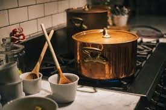
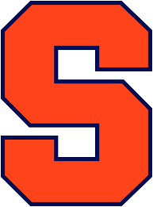

I grew up in Fairfax, Virginia to Kim and Gary Stewart. Since I was very little my dad and I played soccer in the yard till I was old enough to be on my very first team in Kindergarten. My dad was the captain of his soccer team back in high school and passed the love of the sport down to me. I am currently a sports management student at David B. Falk School of Sport and Human Dynamics. I am planning on going into Community Relations for a professional sports team. Ideally, I want to work for the NWSL or MLS.
True Crime: I fell in love with listening to true crime podcasts. I listen to true crime podcasts at the gym, long car rides, or anytime I have a chance. Some of my favorite podcasts are My Favorite Murder, Women in Crime, and True Crime Obsessed. Each podcast goes over a true crime story and lays out all the facts and reasons for the crime. Not only does each podcast tell the story of the crime but brings attention to important issues going on in the justice system and in social justice. Listening to true crime podcasts has also made me more aware of my surroundings and how to stay safe.
Cooking: Now that I am a junior in college, I have spent a lot more time cooking my meals. Currently, I have been watching a lot of cooking and recipes on TikTok for inspiration. I love Asian cuisine and I have made kimchi jjigae, Tteokbokki, and different types of curries. I am trying to challenge myself and make as many new dishes as possible. And slowly but surely teach myself to cook a bunch of different recipes.
Journey to Syracuse University: In high school, I had no idea where I wanted to go for college. But I have a general idea on what I wanted to major in: Communications. I researched a bunch of different schools with outstanding communication programs. One school was Rollins College, a small liberal arts school in Orlando, Florida. I fell in love with school. The campus was gorgeous, and it was the number one school in the south. But my parents wanted me to look at all of my top three schools. We decided to tour Ithaca and Syracuse. That’s when I realized I wanted to go to big D-1 school. Syracuse was it for me. I loved the campus and Newhouse and known across the country. However, I had a last-minute change of heart. I decided that I was going to apply early decision for Sports Management at Falk. No other school I applied to was going to be in Sports Management. Getting into the Syracuse Sports Management program was deciding my future career path. Luckily, I was accepted early decision and to this day I don’t regret my decision.